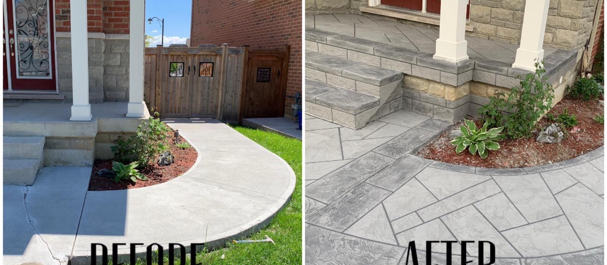
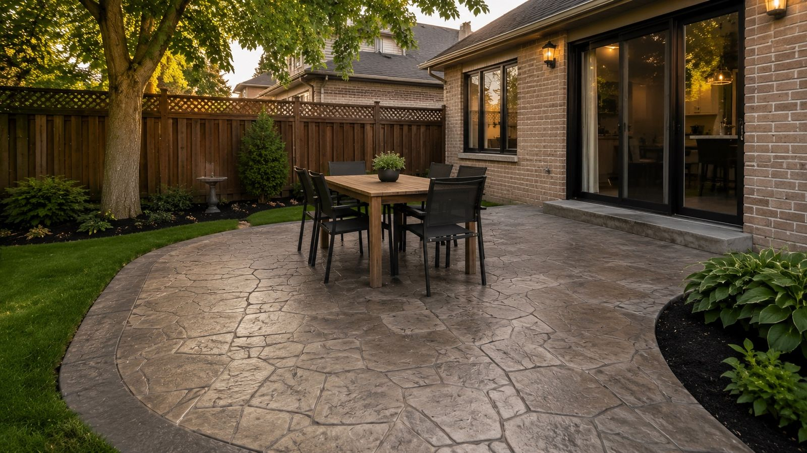

Before anyone spends money resurfacing a porch, driveway, or floor, they want to know one thing: is it going to last, or am I going to be doing this again in two years?
It's the right question to ask. And the honest answer is that resurfacing lasts a long time when it's done correctly — and fails fast when it isn't. The number on the warranty matters far less than what actually goes into the work. So instead of giving you a single number and moving on, here's the full picture from 14+ years of resurfacing concrete across Toronto, Mississauga, Brampton, and the GTA.
The Short Answer
For a properly installed resurfacing in Toronto's climate:
- Exterior surfaces (porches, driveways, pool decks, patios): 10–15 years before they need refreshing.
- Interior microcement (floors, walls, feature surfaces): 15–25+ years, often a lifetime on low-traffic surfaces.
Those ranges assume the job was prepped properly and the surface is resealed on schedule. A bargain job that skipped prep can fail in a single winter. That gap — a decade versus one year — is almost entirely about how the work was done, not the product on the label.
"Resurfacing doesn't fail because the material is weak. It fails because someone skipped the prep. The coating is only as durable as the bond underneath it."
Lifespan by Surface Type
Not every surface wears at the same rate. A driveway taking car weight and road salt has a harder life than an interior floor. Here's roughly what to expect in the GTA:
| Surface | Typical Lifespan | Main Wear Factor |
|---|---|---|
| Interior microcement floor | 15–25+ years | Foot traffic only |
| Covered porch | 12–15 years | Freeze-thaw, foot traffic |
| Open patio | 10–15 years | Weather, UV exposure |
| Pool deck | 10–15 years | Pool chemicals, sun, water |
| Driveway | 8–12 years | Vehicle weight, road salt |
| Stairs / steps | 12–15 years | Concentrated foot traffic, salt |
Notice that the surfaces facing the harshest conditions — driveways and pool decks — sit at the lower end. That's not a weakness in the system; it's physics. Those surfaces simply take more abuse. The good news is that resurfacing is designed to be renewable: when the time comes, the existing overlay is reprofiled and a fresh wear layer goes on top, without starting from scratch.
The 4 Things That Decide How Long It Lasts
Two identical-looking porches can have wildly different lifespans. Here's what actually separates a 15-year job from a 2-year failure.
1. Surface Preparation (the big one)
This is 80% of the answer. The substrate has to be mechanically profiled — ground or shot-blasted to open the concrete's pores — so the overlay can form a true mechanical bond. Cracks must be repaired, hollow areas rebuilt, and contaminants removed. When you hear about resurfacing "peeling" or "lifting," it's almost always a prep failure. The coating didn't bond because the surface wasn't ready for it.
2. The Material System
A quality polymer-modified overlay is engineered to flex with temperature swings. That flexibility is exactly why it outperforms plain concrete through Toronto winters — instead of cracking under freeze-thaw stress, it moves and recovers. Cheap, non-polymer toppings are rigid and brittle, and they spall the same way the original concrete did. The product matters; it's just second to prep.

3. Sealing & Maintenance
The sealer is the sacrificial layer — it takes the hit from water, salt, oil, and UV so the overlay underneath doesn't have to. Reseal exterior surfaces every 2–3 years and you can easily push a 10-year surface to 15. Ignore the sealer and you'll see the opposite. Maintenance is cheap insurance on an expensive surface.
4. Climate & Exposure
A south-facing driveway baking in summer sun and buried in road salt all winter has a harder life than a shaded, covered porch. You can't change the weather, but you can manage exposure — good drainage, prompt salt cleanup, and a fresh sealer all blunt the impact of the GTA's brutal freeze-thaw swings.
The GTA goes through roughly 40–60 freeze-thaw cycles every winter — each one a chance for water to seep into a surface, freeze, expand, and pry it apart. This is the single biggest factor shortening concrete life in our region, and it's exactly what a flexible polymer overlay plus a maintained sealer is built to survive.
Does It Last as Long as New Concrete?
This is the worry behind the question — that resurfacing is a "patch" that won't hold up like the real thing. In practice, a properly installed polymer overlay is more resistant to freeze-thaw cracking than a fresh poured slab, because the polymers give it flexibility plain concrete doesn't have. Pour a brand-new concrete porch in the GTA and it'll start showing hairline cracks and surface spalling within a few years anyway — concrete is rigid, and our winters are unforgiving.
So you're not trading durability for savings. You're getting comparable (often better) surface longevity, at 40–60% less than replacement, with no demolition and no multi-week project. The overlay is also renewable in a way a cracked slab isn't.
How to Get the Most Years Out of It
Want your resurfacing to land at the top of its range instead of the bottom? It comes down to a short, simple maintenance routine:
- Reseal on schedule — every 2–3 years outdoors. When water stops beading on the surface, it's time.
- Clean salt off promptly in winter. De-icing salt is the #1 enemy of any exterior surface in the GTA. Rinse it off when you can.
- Skip the metal snow shovel. Use a plastic or rubber-edged shovel to avoid gouging the wear layer.
- Avoid harsh acidic cleaners. A mild pH-neutral cleaner and water handle almost everything. Acids eat sealers.
- Keep water draining away. Standing water and poor grading undermine any surface over time.

Signs It's Time to Refresh
Resurfacing rarely "fails" suddenly — it tells you when it needs attention. Watch for:
- Water no longer beads on the surface — the sealer has worn through and it's time to reseal.
- The color looks dull or faded in high-traffic paths — surface wear, usually fixed with a reseal or refresh coat.
- Fine surface scratches are catching dirt — a light refresh restores it.
- Any edge lifting or hollow spots — rare, but worth a professional look before it spreads.
Catch these early and a refresh is a fraction of the original cost. Most surfaces never need a full re-do — just a fresh wear layer every decade or so.
The Bottom Line
Done right, concrete resurfacing lasts 10–15 years outdoors and 15–25+ years indoors in Toronto's climate — comparable to new concrete, at a fraction of the cost, and renewable when the time finally comes. The variable that matters most isn't the brand of overlay or the number on the warranty. It's whether the surface was prepped properly and kept sealed.
That's why we put 80% of our attention into what happens before the finish coat goes down, and back every resurfacing job with a 3-year warranty. We'd rather build something that lasts 15 years than something that looks good for one.
Thinking about resurfacing and want a straight answer on what it'll cost and how long it'll last for your specific surface? Send us a few photos on WhatsApp, or book a free on-site estimate. No pressure, no upsell — just an honest read.